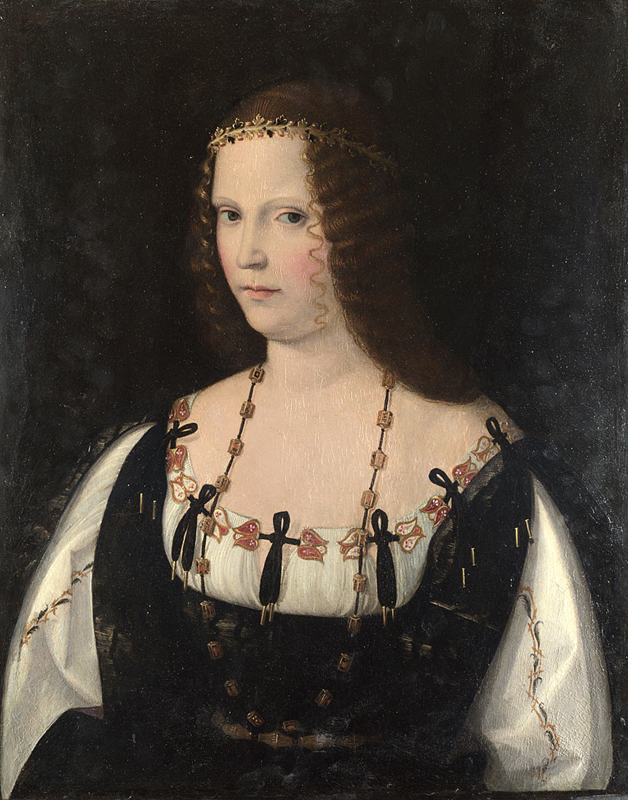

Borgia, Lucrezia

Tipologia di soggetto produttore: Persona
Cognome, Nome: Borgia, LucreziaVIAF
Sesso: F
Date di esistenza: 18 aprile 1480 - 24 giugno 1519
Luogo di nascita: SubiacoGeoNames
Luogo di morte: FerraraGeoNames
Funzioni, occupazioni e attività:
- Duchessa consorte di Ferrara, Modena e Reggio
- Duchessa consorte di Bisceglie e Principessa consorte di Salerno
- Signora consorte di Pesaro e Gradara e Contessa consorte di Cotignola
- Governatrice di Spoleto
- Reggente dello Stato Pontificio
- Reggente del Ducato di Ferrara
Famiglia correlata: BorgiaWikipedia
Persone correlate (e relazione):
- [padre] Borgia, Rodrigo poi Papa Alessandro VIVIAF
- [coniuge] Sforza, GiovanniVIAF
- [coniuge] D'Aragona, AlfonsoVIAF
- [coniuge] Este, Alfonso d'VIAF
Pagina Wikipedia: Lucrezia BorgiaWikipedia
Controllo di autorità: